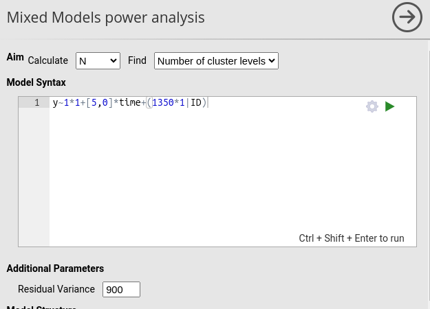
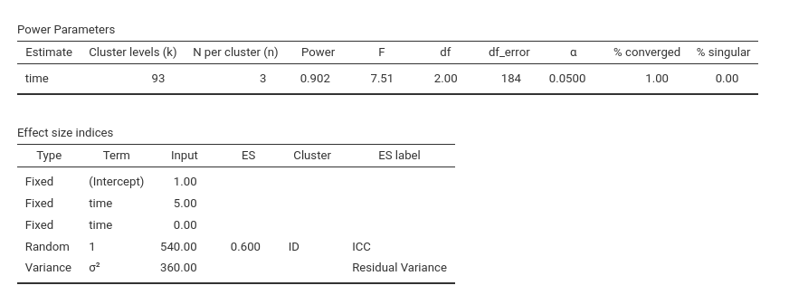
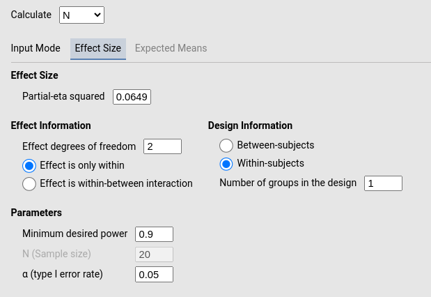
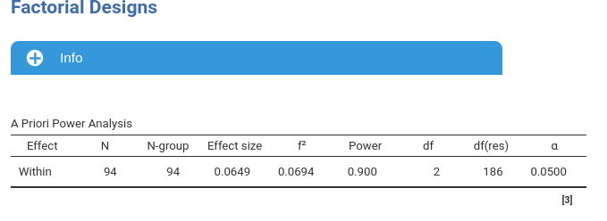
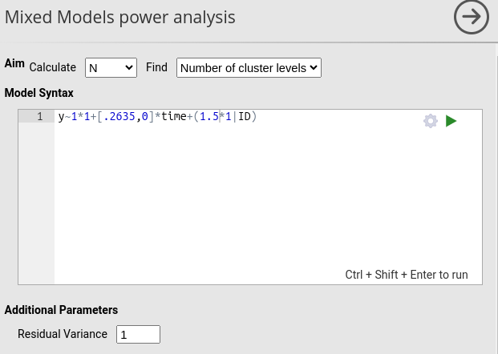
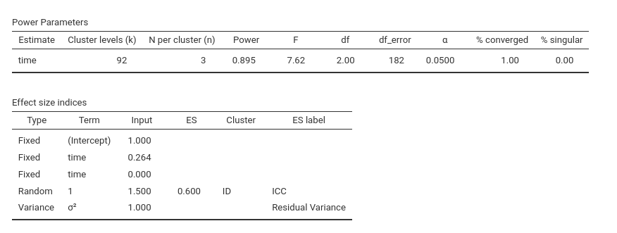

Mixed models: model syntax
keywords power analysis, mixed models, multilevel models, participants by stimuli
0.8.2
Draft version, mistakes may be around
Here we discuss examples of defining mixed models parameters for mixed models power analysis in PAMLj based on information taken from a repeated measure ANOVA. This can be useful when a researcher has gathered information regarding a planned study out of RM ANOVA results and intends to perform a power analysis for a corresponding mixed model. For instance, a researcher may have found a series of published studies reporting results on a 4-time longitudinal design analyzed with RM-ANOVA, and wishes to perform a power analysis for a study with four time points and a continuous covariate, so needing a mixed model.
In other words, here we see how to frame a RM-ANOVA into a mixed model.
In the following examples we need to do some simple calculations.
Here I make them in R, that in jamovi can be accessed with the
Rj module. However, the calculation needed are so simple
they can be carried out also with a simple spreadsheet software.
Basic example
As a working example consider a three-level repeated-measures design (say factor time), for which we can define expected means, SD, and correlation among repeated measure.
### expected means
mu = c(10, 5, 0)
## expected sd
sd <- 30
### expected average correlations among repeated measures
r <- .60
## number of repeated measures
k <- 3The quantity \(sd\) is the within-subject standard deviation, which is simply the expected standard deviation of a measure of the repeated measures. Compound-symmetry requires the repeated measures to have similar standard deviations. so we can set it as an average SD. This is the same quantity one would need to figure out to estimate a Cohen’s d in a t-test power analysis.
With this set up, we can anticipate what would be the expected partial-eta squared:
## expected sum of squares
ESS_m<-sum((mu-mean(mu))^2)
ESS_e<-(k-1)*sd^2*(1-r)
(eta2p<-ESS_m/(ESS_m+ESS_e))## [1] 0.06493506Alternatively, we may have information regarding the partial eta-squared in the repeated measure ANOVA, and a reasonable guess of the correlation among repeated measures (here set to .60).
Mixed model framing
A corresponding mixed model will have a a fixed effect of time, represented in the model as 2 contrast variables (dummy variables), a random intercept across the participant ID and a residual variance. In mixed models notation, we have
y~1+time+(1|ID)Repeated factor effects
We first need to figure out the coefficients for the two dummies representing time effect. In PAMLj power analysis module, categorical variables are represented with deviation contrast coding, meaning that their coefficients represent the difference between each mean and the grand-mean, for the first \(K-1\) means. Thus we can compute them based on the expectation we have on the means.
## [1] "c1=5.0000, c2=0.0000"Intercept variance and residuals
To figure out the correct values of the variances required, we should keep in mind the following relationship
\[ \tau^2 = \frac{r}{1-r}\sigma^2 \]
where \(\tau^2\) is the variance of the intercept, \(r\) is the expected correlation among repeated measures, and \(\sigma^2\) is the residual variance. The residual variance \(\sigma2\) is simply the square of the within subject standard deviation we set up above multiplied by $(1-r): \(\sigma^2=SD^2*(1-r)\).
Now we can compute the two variances needed:
## [1] "sigma2=360.0000, tau2=540.0000"Now we are ready to go. The mixed model can be defined in PAMLj mixed models (see Mixed models: model syntax) for info on the syntax.
y~1*1+[5,0]*time+(540*1|ID)we plug this into the module and set the residual variance to 360.

Then we set the cluster variable ID to have 3
N per cluster, because each participant has three
observations. With the same logic, we set the time variable to
be categorical and to have three levels.

We leave the default value for \(\alpha\) and power, so we are
asking to estimate the required N (Number of cluster levels
i.e. number of participants) for our mixed model to achieve a power of
at least .90.

We need 93 participants.
Checking the results
Because in this example the model is equivalent to a one-way RM ANOVA, we can check the results using PAMLj Factorial Designs power analysis module. In it, we specify that we have a within-subjects effect with 2 degrees of freedom and 1 group (no between effects), and set the partial eta-squared to 0.64935 (see above).
 
We obtain 94 participants, which is equivalent to the results obtained with the mixed model. Results are not exactly the same because the mixed models power analysis employs simulations to estimate the required N, so results may slightly vary.
Standardization
Assume now we want to include a continuous covariate with a small effect on the dependent variable. How can we figure out the coefficient? We can standardize (sort of) in such a way that we can figure out a coefficient representing a small effect.
First, let us remind ourselves that, without any predictor, the variance of the dependent variable is given by \(VAR(y)=\tau^2+\sigma^2\). This means that we can change these quantity to change the scale of the dependent variable, and thus of the coefficients. If we set \(\sigma^2=1\) it follows that
\[ \tau^2=\frac{r}{(1-r)} \]
In our case
## [1] 1.5This means that \(\tau^2\) has been scaled of a factor of
and so it is \(\sigma2\)
## [1] 0.002777778This means that also the (squared) coefficients needs to be scaled of the same factor.
## [1] "c1=0.2635, c2=0.0000"plugging these values into the model yield the same results as above (simulation variability apart), because the two models are equivalent
 
Now we have a model in which the dependent variable variance is roughly 2.5, so the standard deviation is 1.58. Assuming we want the covariate to have an effect equivalent to a person correlation of .3, we know the covariate is standardized, so to obtain a coefficient equivalent to \(r=.3\) we scale .30.
Examples
Some worked out practical examples can be found here
Comments?
Got comments, issues or spotted a bug? Please open an issue on PAMLj at github or send me an email